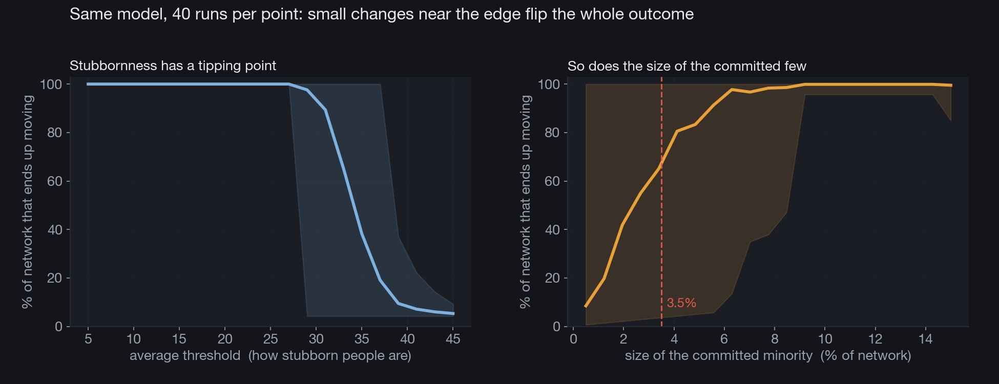

Personal projectProyecto personal
How many people does it take to move the world?¿Cuánta gente hace falta para mover el mundo?
A threshold model, and the tipping points hiding in it.Un modelo de umbral, y los puntos de inflexión que esconde.
Here is a question I keep coming back to. When a movement, a fashion, a protest, or a rumor sweeps through a group of people, how much of it is the message itself and how much is just the structure of who listens to whom? I wanted a setup simple enough that I could watch the gears turn.
Hay una pregunta a la que vuelvo una y otra vez. Cuando un movimiento, una moda, una protesta o un rumor recorre a un grupo de personas, ¿cuánto es el mensaje en sí y cuánto es solo la estructura de quién escucha a quién? Quería un montaje lo bastante simple como para ver girar los engranajes.
Mark Granovetter wrote down a clean version of this in the seventies. Give every person a threshold, the share of the people around them who have to act before they will act too. Some people move on almost no signal. Others hold out until nearly everyone they know has already moved. Start with a small committed group, then let everyone else look around and decide, round after round.
Mark Granovetter escribió una versión limpia de esto en los años setenta. Dale a cada persona un umbral, la proporción de la gente a su alrededor que tiene que actuar antes de que ella también actúe. Algunas se mueven con casi ninguna señal. Otras aguantan hasta que casi todos los que conocen ya se movieron. Empieza con un grupo pequeño y comprometido, y deja que el resto mire alrededor y decida, ronda tras ronda.
The setupEl montaje
I put a hundred and forty people on a small-world network, the kind where most of your ties are local but a few jump clear across the graph. Each person gets a threshold drawn from a normal distribution. A small committed minority starts active. On every round, anyone who sees enough active neighbors flips, and once someone flips they stay.
Puse a ciento cuarenta personas en una red de mundo pequeño, de esas donde la mayoría de tus lazos son locales pero unos pocos saltan al otro lado del grafo. Cada persona recibe un umbral sacado de una distribución normal. Una pequeña minoría comprometida empieza activa. En cada ronda, quien ve suficientes vecinos activos cambia, y una vez que alguien cambia, se queda.
Watch one runMira una corrida
Nothing much happens for a moment, then a few easy to move people flip, which pushes their neighbors over the line, which pushes the next ring, and the whole thing tips over in a handful of rounds. The curve at the bottom has the shape you would expect from that. A slow start, a steep middle, a plateau.
Por un momento no pasa gran cosa, luego unas pocas personas fáciles de mover cambian, lo que empuja a sus vecinos sobre la línea, lo que empuja al siguiente anillo, y todo se vuelca en un puñado de rondas. La curva de abajo tiene la forma que esperarías de eso. Un arranque lento, una parte central empinada, una meseta.
The tipping pointsLos puntos de inflexión
The part I find genuinely surprising shows up when you run the model many times and turn one knob at a time.
La parte que me parece de verdad sorprendente aparece cuando corres el modelo muchas veces y mueves una perilla a la vez.

On the left, average stubbornness barely matters until it crosses a line, and then the outcome falls off a cliff. A population that is a little too cautious on average ends up going almost nowhere, even though no single person is behaving unreasonably. On the right, the same kind of edge appears for the size of the starting group. Below a few percent the push fizzles. Above it, the whole network ends up moving. The crossover sits close to a figure that keeps turning up in studies of real campaigns, the so-called 3.5% rule, the rough share of a population that seems to be enough to force large scale change.
A la izquierda, la terquedad promedio casi no importa hasta que cruza una línea, y entonces el resultado se cae por un precipicio. Una población un poco demasiado cautelosa en promedio termina por no llegar casi a ningún lado, aunque ninguna persona en particular se esté portando de forma irrazonable. A la derecha aparece el mismo tipo de borde para el tamaño del grupo inicial. Por debajo de unos pocos por ciento el empujón se apaga. Por encima, toda la red termina moviéndose. El cruce queda cerca de una cifra que aparece una y otra vez en estudios de campañas reales, la llamada regla del 3.5%, la proporción aproximada de una población que parece bastar para forzar un cambio a gran escala.
What I take from itLo que me llevo de esto
This is a toy, same caveat as always. Real people do not carry one tidy number in their heads, and real networks are messier than anything I drew here. The lesson still travels. Big collective shifts do not need most people to be convinced. They need a structure that lets a committed few reach the easy to move, who then reach everyone else. The same arithmetic that makes change feel hopeless one day can make it feel inevitable the next, and the gap between those two days can be very small.
Es un juguete, la misma advertencia de siempre. Las personas reales no llevan un número ordenado en la cabeza, y las redes reales son más enredadas que cualquier cosa que dibujé aquí. La lección igual viaja. Los grandes cambios colectivos no necesitan que la mayoría esté convencida. Necesitan una estructura que deje a unos pocos comprometidos llegar a los fáciles de mover, que luego llegan a todos los demás. La misma aritmética que un día hace que el cambio se sienta imposible puede al día siguiente hacerlo sentir inevitable, y la distancia entre esos dos días puede ser muy pequeña.
It also gives me a gentler way to read history. The people who moved first were not always braver or smarter. They were the ones with low thresholds and the right neighbors. The rest were waiting for a signal that, for a long while, simply had not arrived.
También me da una forma más amable de leer la historia. Los que se movieron primero no siempre fueron más valientes ni más listos. Fueron los que tenían umbrales bajos y los vecinos correctos. Los demás esperaban una señal que, por mucho tiempo, simplemente no había llegado.
The whole thing is one Python file. You can read the model, the animation, and the tipping curves in Todo es un solo archivo de Python. Puedes leer el modelo, la animación y las curvas de inflexión en cascade_model.py.